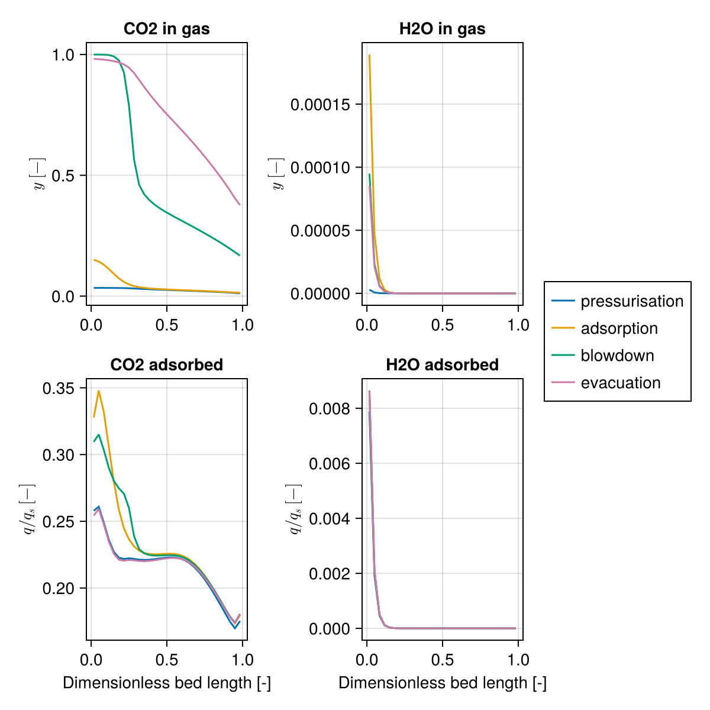
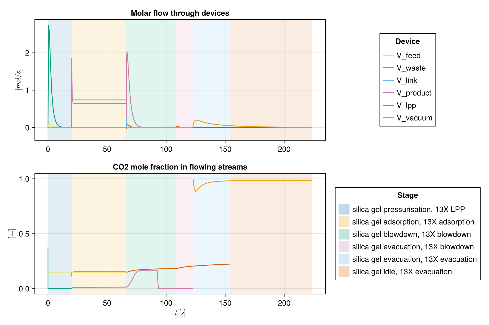

Wet flue gas: dual-adsorbent, two-bed VSA
This example sets up the process proposed in section 4 of Krishnamurthy et al. (2014) for CO₂ capture from a wet flue gas of 15% CO₂, 82% N₂ and 3% H₂O. A silica gel bed takes up the water, and the dried gas passes to a zeolite 13X bed that concentrates the CO₂. Keeping the adsorbents in separate beds, rather than layering them in one, lets each be evacuated on its own, so the CO₂ product comes out practically dry.
feed ──V_feed──┐ ┌──V_link──┐ ┌──V_product── raffinate
bottom SilicaGel top ┘ bottom Zeolite top┤
H2O ◄─V_waste──┘ │ └──V_lpp────── light product
CO2 ◄─V_vacuum┘Both beds run a four-step cycle, coupled only during adsorption:
| Step | Silica gel bed | 13X bed |
|---|---|---|
| pressurisation | with feed, from the bottom | with light product, from the top |
| adsorption | feed in; effluent to the 13X bed | silica gel effluent in; nitrogen out |
| blowdown | out of the bottom (counter-current) | out of the top (co-current) |
| evacuation | out of the bottom: the water | out of the bottom: the CO₂ product |
The blowdown and evacuation times and pressures differ between the beds. The silica gel bed finishes first and stays closed until the 13X bed completes its cycle.
The model uses the paper's data: the isotherms (its Table 1, case 1, for both adsorbents), the column, particle and gas properties (Table S2 of its Supporting Information), the feed and the operating conditions for minimum energy (section 4.3). The particle size is not given there and is taken from Haghpanah et al. (2013). Two simplifications: the 13X light product pressurisation lasts a fixed 20 s, like the silica gel pressurisation, and uses pure nitrogen rather than the stored effluent of the previous adsorption step.
import Mocca
using Mocca.Units1. Adsorbents
Both adsorbents are in Mocca's library. Silica gel adsorbs little CO₂ and N₂ but a great deal of water; 13X adsorbs both CO₂ and water strongly. Loadings in equilibrium with the feed:
gas = Mocca.krishnamurthy_2014_gas()
feed_composition = (CO2 = 0.15, N2 = 0.82, H2O = 0.03)
for name in ("silica_gel_krishnamurthy_2014", "zeolite_13x_krishnamurthy_2014")
q = Mocca.equilibrium_loading(Mocca.load_adsorbent(name), gas; pressure = 1atm, temperature = 298.15, composition = feed_composition)
println(rpad(name, 32), join(["$n $(round(qi, digits = 2))" for (n, qi) in zip(gas.names, q)], ", "), " mol/kg")
endsilica_gel_krishnamurthy_2014 CO2 0.0, N2 0.0, H2O 21.35 mol/kg
zeolite_13x_krishnamurthy_2014 CO2 0.1, N2 0.0, H2O 14.17 mol/kg2. Process
dual_adsorbent_vsa_process builds the two beds, six devices and the cycle. Its defaults are the operating conditions for minimum energy in section 4.3 of the paper:
| Silica gel bed | 13X bed | |
|---|---|---|
| length | 0.41 m | 1 m |
| pressurisation | 20 s | 20 s |
| adsorption | 46.2 s | 46.2 s |
| blowdown | 42.21 s to 0.48 bar | 56.3 s to 0.07 bar |
| evacuation | 46.02 s to 0.3 bar | 101.2 s to 0.03 bar |
with a feed interstitial velocity of 0.7 m/s. Each bed has 30 cells, as in the paper. The cycle has one sequence of steps per bed, run side by side and split into stages wherever either bed changes step. The time steps start at 0.01 s in every stage and double up to 1 s, which carries the solver through the abrupt start of a stage, such as the feed switching on at the start of adsorption.
As in the paper, the silica gel bed starts at its low pressure (the default: the lowest pressure of its cycle) and the 13X bed at the high pressure, both full of nitrogen.
process = Mocca.dual_adsorbent_vsa_process(timestepping = Mocca.TimeStepping(max_dt = 1.0, first_dt = 0.01),
initial_state = Dict(:Zeolite => (pressure = 1atm,)))Process dual-adsorbent VSA, wet flue gas: CO2/N2/H2O feed at 1.013 bar, 298.15 K, capturing CO2
SilicaGel: fixed bed of silica gel, 30 cells
bottom V_feed (feed), from boundary at 1.013 bar; V_waste (waste), to boundary at 0.3 bar
top V_link (link) to Zeolite bottom
Zeolite: fixed bed of zeolite 13X, 30 cells
bottom V_link (link) to SilicaGel top; V_vacuum (extract), to boundary at 0.03 bar
top V_product (product), to boundary at 1.013 bar; V_lpp (light_inlet), from boundary at 1.013 bar
cycle of 6 stages, 223.7 s:
silica gel pressurisation, 13X LPP 20.0 s V_feed, V_lpp
silica gel adsorption, 13X adsorption 46.2 s V_feed, V_link, V_product
silica gel blowdown, 13X blowdown 42.21 s V_waste, V_product
silica gel evacuation, 13X blowdown 14.09 s V_waste, V_product
silica gel evacuation, 13X evacuation 31.93 s V_waste, V_vacuum
silica gel idle, 13X evacuation 69.27 s V_vacuum
3. Cycling to the paper's steady state
The paper judges cyclic steady state by the CO₂ balance: the CO₂ fed and the CO₂ leaving must agree within 0.5% for five consecutive cycles, after at least 50 cycles (its eq. S19).
result = Mocca.cyclic_steady_state(process; method = :mass_balance, max_cycles = 300)
println("Cycles: $(result.iterations), CO₂ balance met: $(result.converged), last error: $(round(100 * result.history[end], digits = 2))%")Cycles: 131, CO₂ balance met: true, last error: 0.48%The criterion only checks CO₂, and the water is far from steady when it is met. The silica gel keeps about 98% of the water fed each cycle and removes little of it in blowdown and evacuation, so it fills over the cycles. In this model the water starts to break through to the 13X bed after about 100 cycles, close to when the CO₂ balance closes, and rises from about 20 ppm at cycle 100 to over 1% by cycle 300. method = :anderson or :newton requires every variable, including the water loading, to settle; for this process it reaches a state in which the silica gel is saturated and much of the water passes into the 13X bed.
4. Process performance
performance measures the process from its devices' roles over the last cycle: the extract (13X evacuation) is the CO₂ product, recovery is relative to the CO₂ fed, and the energy counts the vacuum pumps on every outlet below atmospheric pressure (the silica gel waste line, the 13X blowdown and evacuation) and the feed compressor.
perf = Mocca.performance(result)(purity = 0.9563784606815549, recovery = 0.8557833101552855, specific_energy = 194.65400484849138, productivity = 0.32483872119666807, energy = 140715.85760271622, cycle_time = 223.7000000000001, feed = [5.3316547214483165, 29.14653801787474, 1.0663198301473913], extract = [4.562741126126097, 0.20782674353623468, 0.0002852117365305823], product = [0.684421790534575, 35.35502620175978, 2.916603576772216e-8], adsorbent_volume = 0.0627902269691358, adsorbent_mass = 72.59619007452851)The paper's productivity is per m³ of 13X per day, and its energy counts the vacuum pumps only. The water entering the 13X bed comes from the link between the beds.
states, ts = result.states, result.timesteps
n_product = perf.extract
n_to_zeolite = Mocca.stream_totals(states, ts, :V_link)
pumps = sum(Mocca.vacuum_pump_energy(states, ts, d) for d in (:V_waste, :V_product, :V_vacuum))
zeolite_volume = sum(process.parameters[:Zeolite][:SolidVolume])
M_CO2 = gas.molar_masses[1]
summary = (
purity = perf.purity,
recovery = perf.recovery,
pump_energy_kWh_per_t = Mocca.specific_energy_kwh_per_tonne(pumps, n_product, M_CO2),
energy_with_feed_compressor_kWh_per_t = perf.specific_energy,
productivity_t_per_m3_13X_day = n_product[1] * M_CO2 / 1000 / zeolite_volume / (perf.cycle_time / 86400),
water_to_13X_fraction_of_feed = n_to_zeolite[3] / perf.feed[3],
water_to_13X_max_ppm = 1e6 * maximum(s[:V_link][:InletComposition][3, 1] for s in states if s[:V_link][:MolarFlow][1] > 0),
)
for (k, v) in pairs(summary)
println(rpad(k, 40), round(v, sigdigits = 3))
endpurity 0.956
recovery 0.856
pump_energy_kWh_per_t 192.0
energy_with_feed_compressor_kWh_per_t 195.0
productivity_t_per_m3_13X_day 1.74
water_to_13X_fraction_of_feed 0.0236
water_to_13X_max_ppm 775.0For these conditions the paper reports 95% purity, 90% recovery, 177 kWh per tonne of CO₂ and 1.82 t of CO₂ per m³ of 13X per day, with 20 ppm of water in the gas entering the 13X bed. When the CO₂ balance closes, this model gives about 95.6% purity, 86% recovery, 190 kWh/t and 1.75 t/m³/day, with a few hundred ppm of water entering the 13X bed.
5. Bed profiles
Profiles at the end of each bed's steps in the last cycle, as in Figures 10 and 11 of the paper.
fs = process.flowsheet
sg_ends = cumsum([20.0, 46.20, 42.21, 46.02])
x_ends = cumsum([20.0, 46.20, 56.30, 101.20])
step_names = ["pressurisation", "adsorption", "blowdown", "evacuation"]
f_silica_gel = Mocca.plot_profiles(states, ts, fs[:SilicaGel], sg_ends;
labels = step_names, unit = :SilicaGel, components = [1, 3])
f_zeolite = Mocca.plot_profiles(states, ts, fs[:Zeolite], x_ends;
labels = step_names, unit = :Zeolite, components = [1, 3])
The streams through the devices over the cycle:
f_streams = Mocca.plot_flowsheet_streams(states, process.model, ts; stages = Mocca.stages(process))
Example on GitHub
If you would like to run this example yourself, it can be downloaded from the Mocca.jl GitHub repository.
This page was generated using Literate.jl.